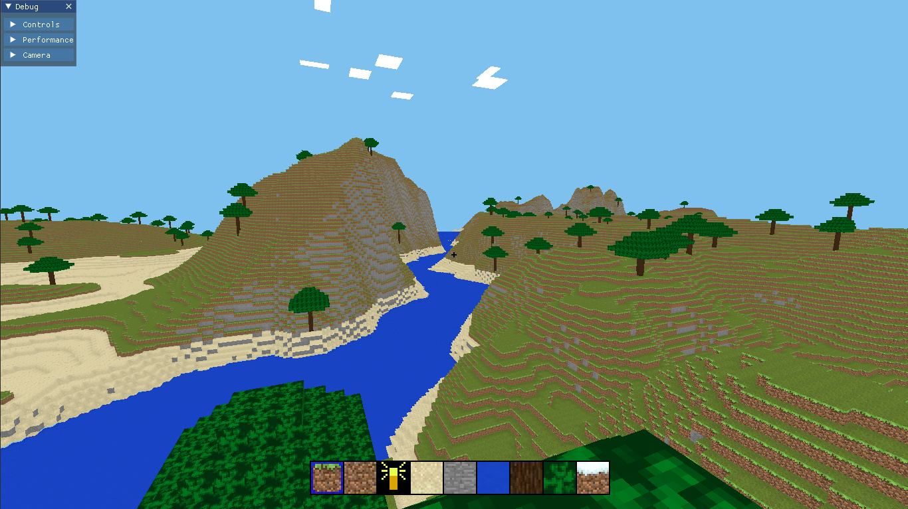

Projects
Crafty

C++ | OpenGL
A voxel game made in C++. Primarily a test bed for exploring 3D graphics.
QPomoClock
JavaScript | Qt
A minimal productivity timer made in Qt with Quick and QML
PyPac
Python | SDL2
A simple retro game as a first project for Python
3D Software Renderer
C++
The end result produced by following a course on software rendering
Tetris clone

C# | Unity
A 3D Tetris clone intended as an introductory project in the Unity engine.